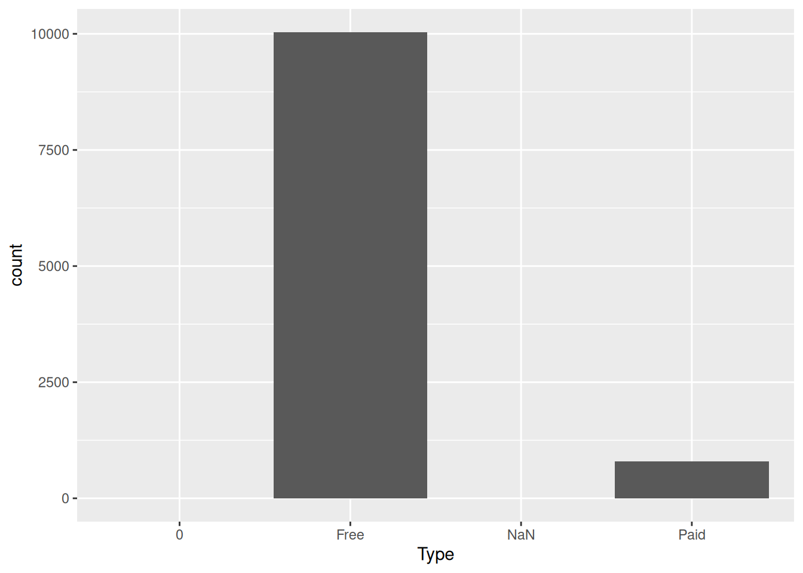
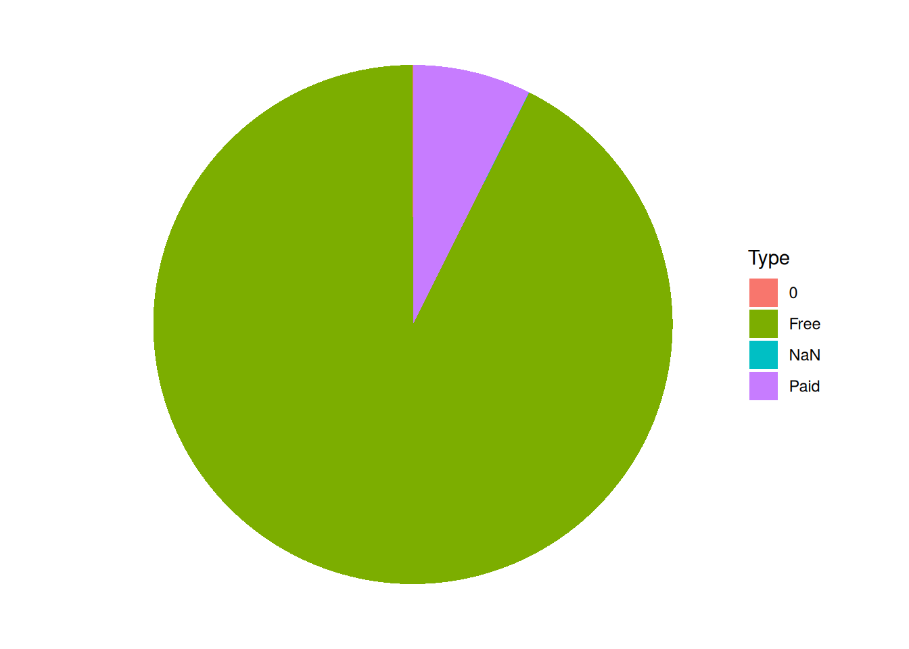
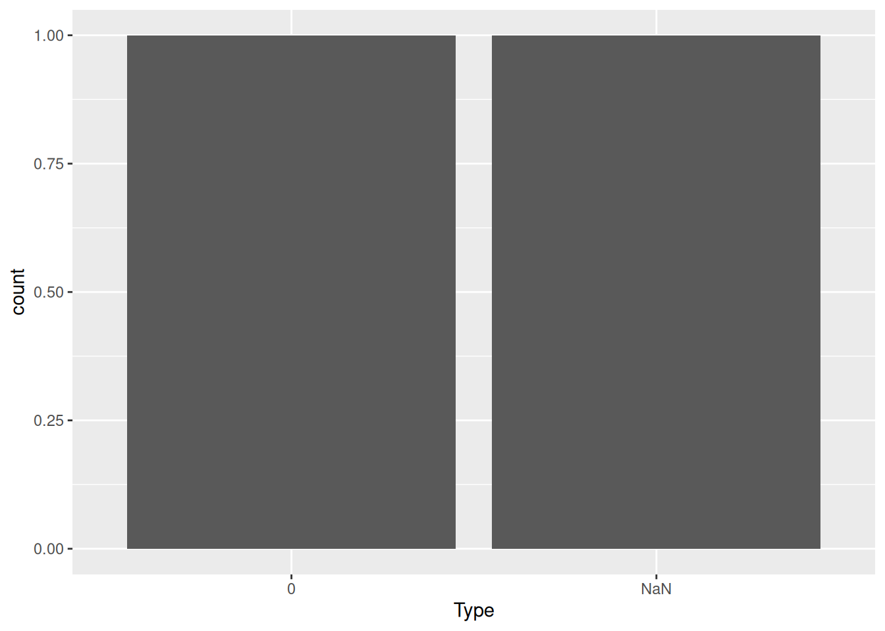
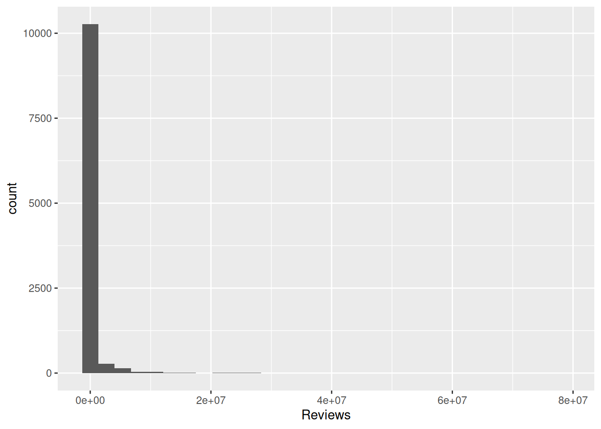
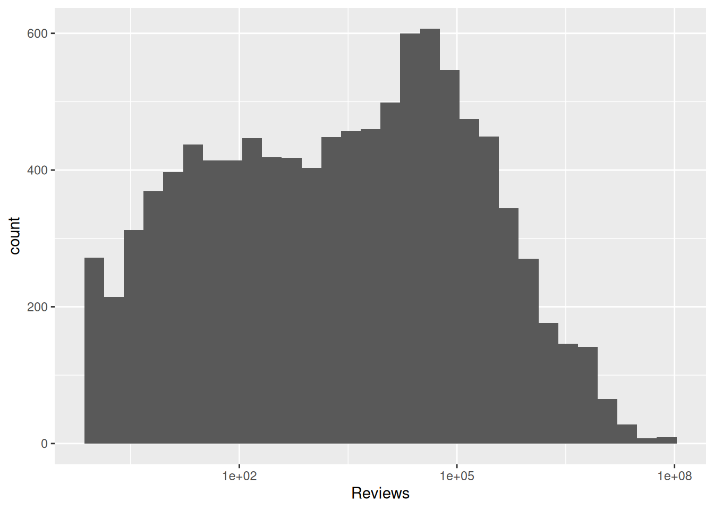
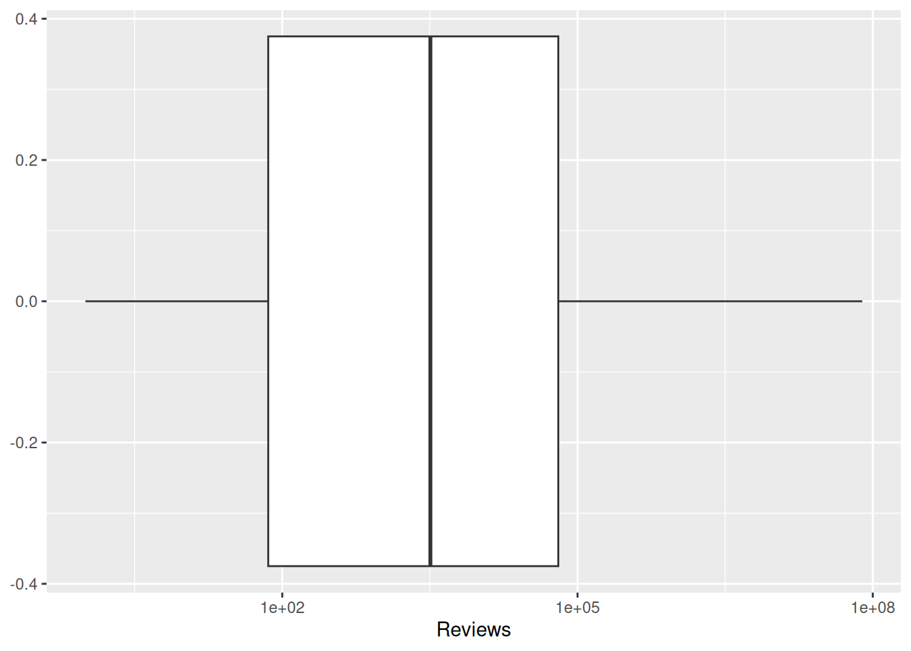
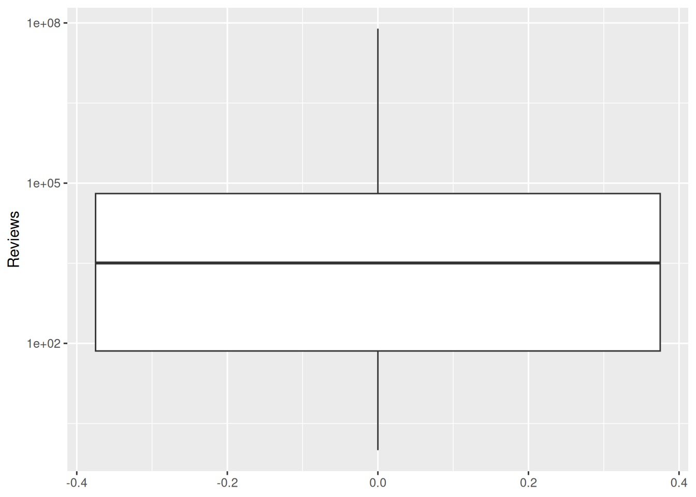

library(readr)
library(ggplot2)
library(dplyr)practice_1
Load libraries
Ingest the data from GitHub SMM635 repo
The dataset comes from Kaggle’s Google Play Store Apps project. Please refer to the project description for details concerning the data gathering and structuring aspects.
The project comprises two data tables: app- and review-level data. We will focus on the former.
data_source <- "https://raw.githubusercontent.com/simoneSantoni/data-viz-smm635/refs/heads/master/data/googleplaystore.csv"
apps <- read_csv(data_source)Familiarize with data
Key Figures
spec(apps)cols(
App = col_character(),
Category = col_character(),
Rating = col_double(),
Reviews = col_double(),
Size = col_character(),
Installs = col_character(),
Type = col_character(),
Price = col_character(),
`Content Rating` = col_character(),
Genres = col_character(),
`Last Updated` = col_character(),
`Current Ver` = col_character(),
`Android Ver` = col_character()
)Data Preview
apps# A tibble: 10,841 × 13
App Category Rating Reviews Size Installs Type Price `Content Rating`
<chr> <chr> <dbl> <dbl> <chr> <chr> <chr> <chr> <chr>
1 Photo Ed… ART_AND… 4.1 159 19M 10,000+ Free 0 Everyone
2 Coloring… ART_AND… 3.9 967 14M 500,000+ Free 0 Everyone
3 U Launch… ART_AND… 4.7 87510 8.7M 5,000,0… Free 0 Everyone
4 Sketch -… ART_AND… 4.5 215644 25M 50,000,… Free 0 Teen
5 Pixel Dr… ART_AND… 4.3 967 2.8M 100,000+ Free 0 Everyone
6 Paper fl… ART_AND… 4.4 167 5.6M 50,000+ Free 0 Everyone
7 Smoke Ef… ART_AND… 3.8 178 19M 50,000+ Free 0 Everyone
8 Infinite… ART_AND… 4.1 36815 29M 1,000,0… Free 0 Everyone
9 Garden C… ART_AND… 4.4 13791 33M 1,000,0… Free 0 Everyone
10 Kids Pai… ART_AND… 4.7 121 3.1M 10,000+ Free 0 Everyone
# ℹ 10,831 more rows
# ℹ 4 more variables: Genres <chr>, `Last Updated` <chr>, `Current Ver` <chr>,
# `Android Ver` <chr>Variable Definitions
App
- Type: Text (String)
- Description: Name of the application
- Example Values:
- “Photo Editor & Candy Camera & Grid & ScrapBook”
- “Coloring book moana”
- “U Launcher Lite – FREE Live Cool Themes, Hide Apps”
- “Sketch - Draw & Paint”
- “Photo Editor & Candy Camera & Grid & ScrapBook”
- Missing Values: Expected to be minimal/none (key identifier)
- Notes: May contain special characters, emojis, and version information
Category
- Type: Categorical (String)
- Description: Primary category classification of the app on Google Play Store
- Unique Categories: 33 main categories + some miscoded entries
- Data Quality Issues: Contains miscoded entries (app names/descriptions appearing as category values)
Rating
- Type: Numeric (Float)
- Description: Average user rating on a scale of 1.0 to 5.0
- Range: 1.0 - 5.0 (expected)
- Example Values: 4.1, 3.9, 4.7, 4.5
- Missing Values: Expected to be present for apps with no ratings
- Notes: Higher values indicate better user satisfaction
Reviews
- Type: Numeric (Integer)
- Description: Total number of user reviews submitted for the app
- Example Values: 159, 967, 87510, 215644
- Range: 0 to millions
- Notes: Indicator of app popularity and user engagement
Size
- Type: Text (String with units)
- Description: Size of the application
- Format: Number followed by unit (M for megabytes, k for kilobytes)
- Example Values: “19M”, “14M”, “8.7M”, “25M”
- Special Values:
- “Varies with device” - size depends on device specifications
- “Varies with device” - size depends on device specifications
- Notes: Requires parsing to convert to numeric format for analysis
Installs
- Type: Categorical (String)
- Description: Number of times the app has been installed (in ranges)
- Format: Comma-separated numbers with plus sign
- Example Values: “10,000+”, “500,000+”, “5,000,000+”, “50,000,000+”
- Notes: Requires parsing to convert to numeric format; provides order of magnitude rather than exact counts
Type
- Type: Binary Categorical (String)
- Description: Whether the app is free or paid
- Distribution: Majority of apps are free
- Notes: Some data quality issues with miscoded entries
Price
- Type: Text (String with currency symbol)
- Description: Price of the app (if paid)
- Format: Usually “0” for free apps or “$X.XX” for paid apps
- Example Values: “0”, “$0.99”, “$2.99”, “$4.99”
- Notes:
- Free apps should have “0” value
- Requires parsing to remove currency symbol for numeric analysis
- Currency is primarily USD ($)
- Free apps should have “0” value
Content Rating
- Type: Categorical (String)
- Description: Age group suitability rating for the app
- Standard Values:
- “Everyone” - Suitable for all ages
- “Everyone 10+” - Suitable for ages 10 and up
- “Teen” - Suitable for ages 13 and up
- “Mature 17+” - Suitable for ages 17 and up
- “Adults only 18+” - Suitable for ages 18 and up
- “Unrated” - No rating assigned
- “Everyone” - Suitable for all ages
- Example Values: “Everyone”, “Teen”
- Notes: Follows Google Play Store’s content rating system
Genres
- Type: Text (String, may contain multiple values)
- Description: Detailed genre classification (may include subcategories)
- Format: Primary genre, sometimes followed by semicolon and secondary genre
- Example Values:
- “Art & Design”
- “Art & Design;Pretend Play”
- “Art & Design”
- Notes: More specific than Category field; can contain multiple genres separated by semicolons
Last Updated
- Type: Date (String)
- Description: Date when the app was last updated
- Format: “Month Day, Year” (e.g., “January 7, 2018”)
- Example Values: “January 7, 2018”, “January 15, 2018”, “August 1, 2018”, “June 8, 2018”
- Notes: Can be used to assess app maintenance and developer activity; requires date parsing for analysis
Current Ver
- Type: Text (String)
- Description: Current version of the application
- Format: Varies widely (semantic versioning, numeric versions, descriptive text)
- Example Values: “1.0.0”, “2.0.0”, “1.2.4”, “Varies with device”
- Special Values: “Varies with device” - version depends on device
- Notes: No standardized format across apps
Android Ver
- Type: Text (String)
- Description: Minimum Android version required to run the app
- Format: Version number followed by “and up”
- Example Values: “4.0.3 and up”, “4.2 and up”
- Special Values: “Varies with device” - requirement depends on device
- Notes: Indicates app compatibility range
Data Visualization
Univariate Charts
Categorical Variables
Figure 1 shows possible data quality issues: some cases present value \(0\), whose meaning is unclear in the context of this variable; other cases present missing values, displayed as \(NaN\).
ggplot(data = apps, mapping = aes(x = Type)) +
geom_bar()

The same information content can be displayed by using a pie chart as per Figure 2
ggplot(data = apps, mapping = aes(x = "", fill = Type)) +
geom_bar(width = 1) +
coord_polar(theta = "y") +
theme_void()

To explore the data quality issues further, we can filter and visualize only the cases where Type is neither “Free” nor “Paid.” To do so, we can apply ggplot functions over the ouput of a dplyr. Figure 3 indicates one case compatible with data regitration error (\(Type == 1\)) and one case that does not present a value for
apps %>%
filter(Type != "Free" & Type != "Paid") %>%
ggplot(mapping = aes(x = Type)) +
geom_bar()

Continuous Variables
Figure 4 shows the distribution of apps by level of reviews. It is worth noticing that ggplot groups the cases into 30 bins, that is ranges of variation for \(X\). To change the number of bins, populate the \(\texttt{bins}\) optional argument.
ggplot(data = apps, mapping = aes(x = Reviews)) +
geom_histogram()

The distribution of reviews is highly skewed. To better visualize the pattern, we can apply a log transformation to the x-axis as per Figure 5.
ggplot(data = apps, mapping = aes(x = Reviews)) +
geom_histogram() +
scale_x_log10()

To display the univariate distribution of a continuous variable, one can also use a boxplot, as shown in Figure 6
ggplot(data = apps, mapping = aes(x = Reviews)) +
geom_boxplot() +
scale_x_log10()

By default, ggplot proposes a horizontal boxplot. To get a vertical boxplot, one has to populate the y-axis ― as shown in Figure 7 ― instead of the x-axis as in the previous example.
ggplot(data = apps, mapping = aes(y = Reviews)) +
geom_boxplot() +
scale_y_log10()
